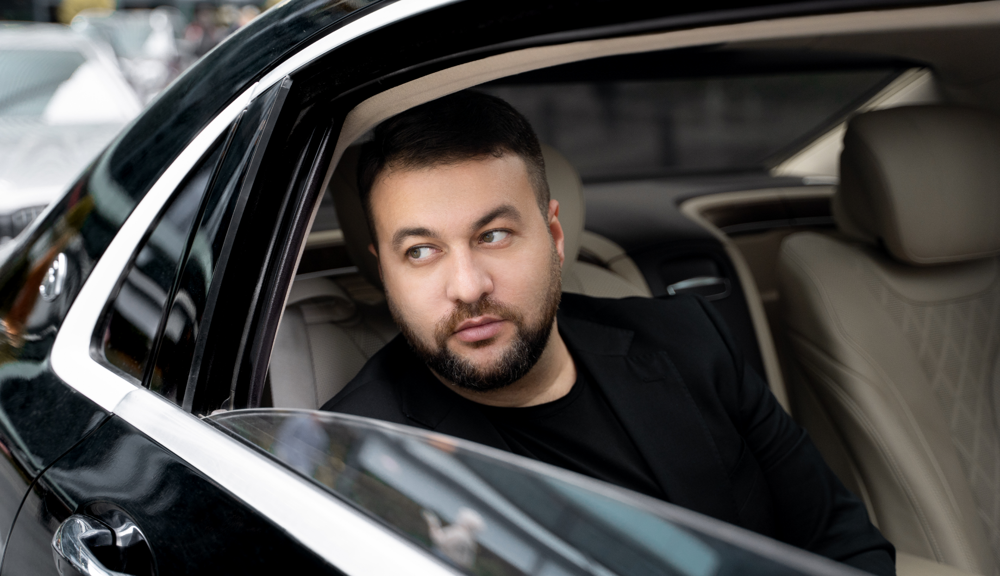

С 2012 года Март работал с экс-продюсером Николая Баскова и директором
«Ласкового май» - Рашидом Дайрабаевым. В это время был выпущен сингл
«Континенты», звучавший на топовых музыкальных радиостанциях и каналах.
После разрыва отношений с Дайрабаевым Март начал сотрудничать с новым
продюсером — Софией Гулян, с которой в тот же год было принято решение об
участии Марта в конкурсе «THE VOICE of Armenia», где он стал финалистом.
Работа в творческом тандеме продлилась вплоть до 2018 года.
Песни, написанные Мартом: «Ты моя любовь» (2015), «Полетели дни» - дуэт с
певицей Зарой (2016), «Миллион» (2017).

Песни «Миллион» и «Полетели дни» так полюбились зрителю, что собрали 18
миллионов просмотров. Эти песни наполняют лучшими, чистыми чувствами и
радостью. А уникальный, искренний трек «Папина дочка» (2018), пронизанный
любовью к дочери, стал любимой песней всех отцов, воспитавших и вырастивших
девочек. Он трогает за душу каждым словом и нотой, трек получился честным и
пошел в народ, теперь он звучит на свадьбах так же часто, как
марш Мендельсона.
Март состоялся как автор. Он стал автором песен для многих известных
исполнителей: Стаса Михайлова, Зары, Афины, Этери Бериашвили, Анны
Семенович.